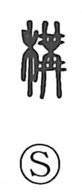

構

Uncategorized
Kun: kamaeru, kamau | On: kou
to build ・ to construct ・ to put together ・ to combine ・ to contrive
Explanation
Shirakawa reads 構 as a phono‑semantic character. Its core is the phonetic 冓 (kō), an image of identical elements strung and tied together above and below, expressing the act of assembling or putting things together. With the wood element added, the graph narrows to the concrete scene of fitting pieces of wood into a structure. From this image arise its senses: to build, to set up, to put together or combine, and by extension to contrive.